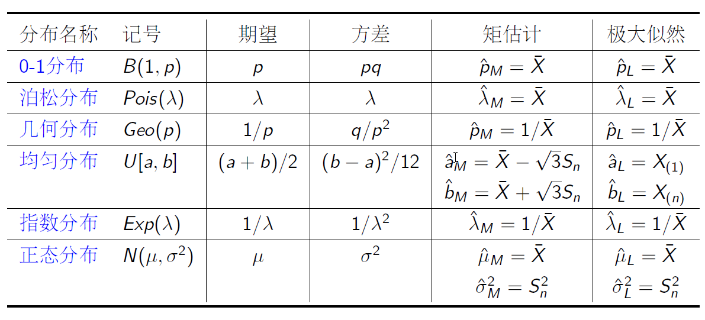
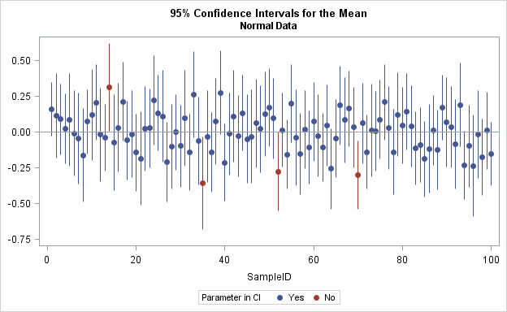
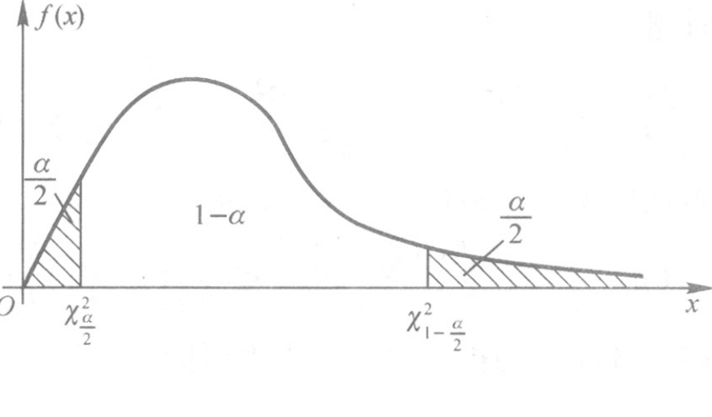

目录
1. 点估计
- 1.1 矩估计法
- 1.2 极大似然估计法
- 1.3 估计的优良性准则
2. 区间估计
- 2.1 单个正态总体的区间估计
- 2.2 两个独立正态总体的区间估计
- 2.3 非正态总体的区间估计
3. 分布估计
- 3.1 直方图法
- 3.2 核估计法
参数估计
在实际问题中，对于一个总体\(X\)往往是仅知其分布的类型\(f(x, \theta)\)，而参数\(\theta=(\theta_1,\dots,\theta_m)\in \Theta \subset \mathbb{R}^m\)是未知的。对任给的实值函数\[g:\ \mathbb{R}^m\to \mathbb{R},\] 如何根据\(X\)的样本\(x_1,\dots,x_n\)估计\(g( \theta)\)的值呢？这就是统计推断中的“参数估计”问题。
点估计：寻找一个统计量\(\hat{ \theta} = T(X_1,\dots,X_n)\)作为$ $的点估计
区间估计：寻找两个统计量\(\hat{ \theta}_1 = T_1(X_1,\dots,X_n)\), \(\hat{ \theta}_2 = T_2(X_1,\dots,X_n)\)，所构成的区间\([\hat{ \theta}_1,\hat{ \theta}_2]\)作为$ $的区间估计
1.1 矩估计法
矩估计的想法来源于大数定理。如果总体\(X\)存在\(k\)阶矩，对任意\(\epsilon>0\), \[ \lim_{n\to \infty} P(|\frac 1 n\sum_{i=1}^n X_i^k-E[X^k]|\ge \epsilon )=0. \]
这说明，当样本容量\(n\)较大时，样本\(k\)阶矩与总体\(k\)阶矩差别很小。矩法估计就是用样本\(k\)阶矩代替总体的\(k\)阶矩。通常用\(\hat{\theta}_M\)表示。一般步骤如下：
列出估计式\(E[X^k]=g_k(\theta_1,\dots,\theta_m),\ k=1,\dots,m.\)
求解关于估计量的方程组\(\theta_k = \theta_k(E[X^1],\dots,E[X^m])\)
用\(M_k=\frac 1 n\sum_{i=1}^n X_i^k\)替代\(E[X^k]\)得到矩估计\(\hat\theta_k = \theta_k(M_1,\dots,M_m)\)
例1
例：求总体\(X\)的期望\(\mu=E[X]\)与方差\(\sigma^2=Var[X]\)的矩估计。
解: (1)列出估计式
\[ \begin{cases} E[X] &= \mu\\ E[X^2] &= \mu^2+\sigma^2 \end{cases} \]
(2)求解关于估计量的方程组 \[ \begin{cases} \mu &= E[X]\\ \sigma^2 &= E[X^2]-(E[X])^2 \end{cases} \]
所以，\(\hat{\mu}_M = \bar X\), \(\hat{\sigma}^2_M = \frac{1}{n}\sum_{i=1}^n X_i^2-(\bar X)^2 = S_n^2.\)
注：不难证明，总体的各阶中心矩的矩估计就是样本各阶中心矩。
例2
例：设总体\(X\sim U[a,b]\), 求\(a,b\)的矩估计。
解: 易知，\(E[X]=(a+b)/2,\ Var[X]= (b-a)^2/12\).
所以， \[ \begin{cases} a &= E[X]-\sqrt{3Var[X]}\\ b &= E[X]+\sqrt{3Var[X]} \end{cases} \]
\[ \begin{cases} \hat a_M &= \bar{X}-\sqrt{3}S_n\\ \hat b_M &= \bar{X}+\sqrt{3}S_n \end{cases} \]
例3
例：设总体\(X\)的分布密度为 \[ f(x)=\frac{\theta}{2}e^{-\theta|x|},\ x\in\mathbb{R}, \theta>0. \] 求\(\theta\)的矩估计。
解: \[ E[X]= 0,\ E[X^2]=\int_{-\infty}^{\infty}x^2\frac{\theta}{2}e^{-\theta|x|}d x=\theta\int_{0}^{\infty}x^2e^{-\theta x}d x=\frac{2}{\theta^2} \]
\[\hat{\theta}_M=\sqrt{\frac{2n}{\sum_{i=1}^n X_i^2}}.\]
除外，还可以由\(E[|X|]=1/\theta\)得到另一种矩估计。
1.2 最大似然估计法
最大似然估计法最早由高斯(C.F.Gauss)提出，后来被 Fisher完善。最大似然估计这一名称也是Fisher给的。这是一个目前仍得到广泛应用的方法。它是建立在最大似然原理基础上的一个统计方法。
最大似然原理：最先出现的是概率最大的
例：设有外形完全相同的两个箱子，甲箱中有99个白球和1个黑球，乙箱中有99个黑球和1个白球，今随机地抽取一箱并从中随机抽取一球，结果取得白球，问这球是从哪个箱子中取出？
最大似然估计法
似然函数： \[L(x_1,\dots,x_n;\theta)=L(\theta)=\prod_{i=1}^{n}f(x_i;\theta) \] 给定样本观测值\((x_1,\dots,x_n)\), 记\(L(x_1,\dots,x_n;\theta)\)的最大值点为\(\theta=T(x_1,\dots,x_n)\). 则\(\theta\)的最大似然估计量(MLE, maximum likelihood estimator)为 \[\hat{\theta}_L=T(X_1,\dots,X_n).\]
最大似然估计的一般步骤
第一步：写出似然函数\(L(x_1,\dots,x_n;\theta)\)
第二步：若似然函数\(L\)是\(\theta\)的可微函数，则最大值必然满足似然方程 \[\frac{d L}{d \theta}=0\] 解出\(\theta\), 并验证其是否是极大值：\[\frac{d^2 L}{d \theta^2}<0.\]
注1：为方便求导，一般求对数似然函数\(\ln L(x_1,\dots,x_n;\theta)\)求极大值点
注2：若有多个参数\(\theta_1,\dots,\theta_m\)，对每个变量求偏导，联立\(m\)个方程求解
例1：0-1离散型
例：设总体\(X\sim B(1,p)\), 从中抽取样本\(X_1,\dots,X_n\)的观测值为\(x_1,\dots,x_n\). 求参数\(p\)的最大似然估计。
解: 似然函数为 \[ L(x_1,\dots,x_n;p)=\prod_{i=1}^{n}p^{x_i}(1-p)^{1-x_i}=p^{\sum_{i=1}^nx_i}(1-p)^{n-\sum_{i=1}^nx_i}\]
令\(y=\sum_{i=1}^nx_i\), 对数似然函数为： \[\ln L = y \ln p + (n-y)\ln (1-p).\] 对数似然方程为： \(\frac{d \ln L}{d p} = y/p - (n-y)/(1-p)=0.\) 解得\(p= y/n=\frac{1}{n}\sum_{i=1}^nx_i\). 因为\(\frac{d^2\ln L}{d p^2}<0\), 所以\(p= y/n\)是极大值。\(\hat{p}_L = \bar X.\)
例2：正态分布
例：设总体\(X\sim N(\mu,\sigma^2)\), 从中抽取样本\(X_1,\dots,X_n\)的观测值为\(x_1,\dots,x_n\). 求参数\(\mu,\sigma^2\)的最大似然估计。
解: 似然函数为
\[ L(x_1,\dots,x_n;\mu,\sigma^2)=\prod_{i=1}^{n}f(x_i)=\prod_{i=1}^{n}\frac{1}{\sqrt{2\pi}\sigma}e^{-(x_i-\mu)^2/(2\sigma^2)}\] 令\(\theta_1=\mu,\theta_2=\sigma^2\), 对数似然函数为： \[\ln L = (n/2)\ln (2\pi)-(n/2)\ln\theta_2-\frac{\sum_{i=1}^n(x_i-\theta_1)^2}{2\theta_2}\]
例2：正态分布
对数似然方程组为： \[ \begin{cases} \frac{\partial \ln L}{\partial \theta_1} &=\frac{\sum_{i=1}^n(x_i-\theta_1)}{\theta_2}=0\\ \frac{\partial \ln L}{\partial \theta_2} &=-\frac{n}{2\theta_2}+\frac{\sum_{i=1}^n(x_i-\theta_1)^2}{2\theta_2^2}=0 \end{cases} \] 解得\(\hat{\mu}_L=\bar X,\ \hat{\sigma}^2_L = S_n^2\). (可以验证二阶导函数非正定，即取得极大值。)
例3
例：设总体\(X\sim U[a,b]\), 从中抽取样本\(X_1,\dots,X_n\)的观测值为\(x_1,\dots,x_n\). 求参数\(a,b\)的最大似然估计。
解: 似然函数为 \[ L(x_1,\dots,x_n;a,b)=\frac{1}{(b-a)^n}\prod_{i=1}^{n} 1\{a\le x_i\le b\}\] 注意到\(L\)关于\(a,b\)不可微。容易观察到，当\(a=\min_{i=1,\dots,n}\{x_i\},\ b=\max_{i=1,\dots,n}\{x_i\}\)时\(L\)取得最大值。故\[\hat{a}_L = X_{(1)},\ \hat{b}_L = X_{(n)}.\]
关于最大似然估计的一些说明
最大似然估计的不变性：如果\(\hat{\theta}\)是\(\theta\)的最大似然估计，则对任一函数\(g(\theta)\), 其最大似然估计为\(g(\hat{\theta})\).
当分布中有多余的参数或者数据为截尾或缺失时，似然函数的求极大值比较困难。针对这种问题，文献
Dempster, A.P.; Laird, N.M.; Rubin, D.B. (1977). Maximum Likelihood from Incomplete Data via the EM Algorithm. Journal of the Royal Statistical Society, Series B. 39 (1): 1–38. (cited by 54539, 2018/8/18)
提出了一种有效的Expectation–Maximization (EM)算法。
矩估计与最大似然估计的对比
矩估计法（也称数字特征法）
- 直观意义比较明显，但要求总体\(k\)阶矩存在。
- 缺点是不唯一，此时尽量使用样本低阶矩。
- 观测值受异常值影响较大，不够稳健，实际中避免使用样本高阶矩。
极大似然估计法
- 具有一些理论上的优点（不变性、渐近正态性）
- 缺点是如果似然函数不可微，没有一般的求解法则。
矩估计与最大似然估计的对比

1.3 估计的优良性标准
估计量的无偏性
估计量的有效性
估计量的大样本性质：相合性与渐近正态性
无偏性
定义：设总体\(X\sim F(x;\theta),\theta\in \Theta\), \(T(X_1,\dots,X_n)\)为\(g(\theta)\)的估计量。
- 无偏估计量：
\[E[T(X_1,\dots,X_n)]=g(\theta), \forall \theta\in \Theta\]
- 渐近无偏估计量：
\[\lim_{n\to \infty}E[T(X_1,\dots,X_n)]=g(\theta), \forall \theta\in \Theta\]
无偏性意味着：虽然估计量\(T\)由于随机可能偏离真值\(g(\theta)\), 但取其平均值（期望）却等于\(g(\theta)\). 即没有系统偏差。
例
样本均值是总体的均值的无偏估计，即\(E[\bar X]=E[X]\)
样本方差是总体方差的渐近无偏估计，即\(\lim_{n\to \infty}E[S_n^{2}]=Var[X]\)
修正样本方差是总体方差的无偏估计，即\(E[S_n^{*2}]=Var[X]\)
均方误差
定义：设\(T(X_1,\dots,X_n)\)为\(g(\theta)\)的估计量，其均方误差 (mean squared error, MSE)为 \[M_{\theta}(T):=E_\theta[(T(X_1,\dots,X_n)-g(\theta))^2].\] 均方根误差 (root mean squared error, RMSE)为 \[R_{\theta}(T):=\sqrt{E_\theta[(T(X_1,\dots,X_n)-g(\theta))^2]}.\]
注意到：
\[M_{\theta}(T)=(E[T]-g(\theta))^2+Var(T)=偏差^2+方差\]
注：如果\(T\)是\(g(\theta)\)的无偏估计，则\(M_{\theta}(T)=Var(T)\)
比较两个估计量的优劣
定义：若\(T_1(X_1,\dots,X_n)\)和\(T_2(X_1,\dots,X_n)\)都为\(g(\theta)\)的估计量，
- 如果\(M_{\theta}(T_1)\le M_{\theta}(T_2),\forall \theta\in \Theta\), 则称\(T_1\)不次于\(T_2\)。
- 在此基础上，如果存在一个\(\theta_0\in\Theta\)使得\(M_{\theta_0}(T_1)< M_{\theta_0}(T_2)\), 则称\(T_1\)比\(T_2\)有效。
例：设总体\(X\)的期望\(\mu\)方差为\(\sigma^2\), \(X_1,\dots,X_n\)为其样本(\(n>1\))，证明下列估计量\(\hat{\mu} = \sum_{i=1} C_iX_i\)为\(\mu\)的无偏估计的充要条件是\(\sum_{i=1}^nC_i = 1.\) 在满足该条件前提下，\(C_i\)取何值时，\(\hat{\mu}\)的最有效。
解：\(E[\hat{\mu}]=\mu\Leftrightarrow \sum_{i=1}^nC_i = 1\) \[Var[\hat{\mu}]=\sigma^2\sum_{i=1}^nC_i^2\ge \sigma^2\frac{(C_1+\dots+C_n)^2}{n}=\frac{\sigma^2}{n}.\]
而且唯一的最小值在\(C_i=1/n,i=1,\dots,n\)处取得。
一致最小方差无偏估计
定义：如果\(T_0(X_1,\dots,X_n)\)为\(g(\theta)\)的无偏估计，如果对于\(g(\theta)\)的任意无偏估计量\(T(X_1,\dots,X_n)\)都有 \[Var[T_0]\le Var[T],\ \forall\theta\in\Theta\] 则称\(T_0\)为\(g(\theta)\)的一致最小方差无偏估计量 (uniformly minimum-variance unbiased estimator, UMVUE)。
思考
- 无偏估计量是不是一定存在？（反例见课本例2.5, p27）
- 如果存在多个无偏估计量，如何找到UMVUE？（Blackwell, Rao, Lehmann, Scheffe等统计学家获得了一系列寻求UMVUE的理论和方法）
Black-Lehmann-Scheffe定理
定义：设\(T(X_1,\dots,X_n)\)为统计量。如果对任何(Borel可测)函数\(u(\cdot)\), 只要\(E[u(T)]=0\)(对一切\(\theta\))就可以推出\(P(u(T)=0)=1\), 这次称统计量\(T\)为完全的统计量。
B-L-S定理：如果\(T(X_1,\dots,X_n)\)为完全的充分统计量，\(\psi(T)\)为\(g(\theta)\)的无偏估计，则\(\psi(T)\)为\(g(\theta)\)的最小方差无偏估计。
说明：可以证明，如果参数\(\theta\)的集合有内点，则指数型分布族的充分统计量 \(\left(\sum_{i=1}^nT_1(x_i),\dots,\sum_{i=1}^nT_k(x_i)\right)\) 是完全的。
Cramer-Rao不等式
定理：设\(X\)的密度为\(f(x;\theta)\), 参数\(\theta\in (a,b)\). \(X_1,\dots,X_n\)为\(X\)的样本，\(\psi(X_1,\dots,X_n)\)是\(g(\theta)\)的一个无偏估计，且满足下列正则性条件：
- \(X\)的支撑与\(\theta\)无关；
- \(g'(\theta)\)和\(\frac{df(x;\theta)}{d\theta}\)都存在且对一切\(\theta\)有
\[\int_{-\infty}^\infty \frac{df(x;\theta)}{d\theta} d x = 0\]
\[\int_{-\infty}^\infty\frac d{d\theta} L(\vec x;\theta) d \vec x=0\]
\[\frac d{d\theta}\int_{-\infty}^\infty \psi(\vec x) L(\vec x;\theta) d \vec x=\int_{-\infty}^\infty \psi(\vec x) \frac d{d\theta}L(\vec x;\theta) d \vec x\]
Cramer-Rao不等式
- \(I(\theta):=E[(\frac {d\ln f(X;\theta)}{d\theta})^2]>0\)
则有 \[Var_\theta[\psi(X_1,\dots,X_n)]\ge \frac{[g'(\theta)]^2}{nI(\theta)}.\]
说明:
- 证明见p. 28
- \(I(\theta)\)叫做Fisher信息量
- 离散情形有类似的结论
- C-R不等式的下界不一定达到，见例2.9, p30.
例
设\(X\sim N(\mu,\sigma^2)\), 其中\(\mu\)未知，\(\sigma\)已知。 Fisher信息量为 \[I(\mu) = E[(\frac {d\ln f(X;\mu)}{d\mu})^2]=\frac 1{\sigma^4}E[(X-\mu)^2]=\frac 1{\sigma^2}\]
\[Var[\bar X] = \frac{\sigma^2}{n}=\frac{1}{nI(\mu)}\]
可以证明：若\(\mu\)已知，则\(\sigma^2\)的估计量\(\frac 1n\sum_{i=1}^n(X_i-\mu)^2\)的方差达到了C-R不等式的下界。
统计量的大样本性质
统计量的相合性
统计量的渐近正态性
统计量的相合性
（弱）相合估计：称\(T_n(X_1,\dots,X_n)\)是\(g(\theta)\)的相合估计，如果对任何 \(\epsilon>0\), 有\[\lim_{n\to\infty}P(|T_n-g(\theta)|\ge \epsilon)=0.\] 等价于依概率收敛\(T_n\stackrel p\to g(\theta)\).
强相合估计：称\(T_n(X_1,\dots,X_n)\)是\(g(\theta)\)的强相合估计，如果\[P(\lim_{n\to\infty}T_n=g(\theta))=1.\] 等价于概率1收敛\(T_n\stackrel {w.p.1}\to g(\theta)\).
说明
- 由强大数定理知，矩估计一般是强估计的
- 最大似然估计在十分广泛的条件下也是有强相合性（见p31)
例
设总体\(X\)的期望\(\mu\)方差为\(\sigma^2\), \(X_1,\dots,X_n\)为其样本，证明
- 样本均值\(\bar X\)是\(\mu\)的相合估计量；
- 样本\(k\)阶原点矩\(M_k\)是总体\(k\)阶原点矩\(E[X^k]\)的相合估计量；
- 样本方差\(S_n^2\)和修正样本方差\(S_n^{2*}\)都是\(\sigma^2\)的相合估计量。
证明：由辛钦大数定律知，\(\bar X\stackrel p\to \mu\), \(M_k\stackrel p\to E[X^k]\).
\[S_n^2 = \frac{1}{n}\sum_{i=1}^nX_i^2-\bar X^2\stackrel p\to E[X^2]-E[X]^2=\sigma^2\] 同理，\(S_n^{2*}=\frac{n-1}{n}S_n^2\stackrel p\to \sigma^2\)
注：这里用到依概率收敛的性质：假设\(X_n\stackrel p\to X,\ Y_n\stackrel p\to Y\). 则\(X_n+Y_n\stackrel p\to X+Y\). 如果\(g\)连续，则\(g(X_n)\stackrel p\to g(X)\), \(g(X_n,Y_n)\stackrel p\to g(X,Y)\).
相合估计的充分条件
定理：设总体\(X\sim F(x;\theta),\ \theta\in \Theta\), 统计量\(T(X_1,\dots,X_n)\)为\(g(\theta)\)的估计量。如果 \[\lim_{n\to \infty}E[T(X_1,\dots,X_n)] = g(\theta),\ \lim_{n\to \infty}Var[T(X_1,\dots,X_n)] =0,\] 则\(T(X_1,\dots,X_n)\)为\(g(\theta)\)的相合估计量。
证明：令\(T_n=T(X_1,\dots,X_n)\). 注意到\[\{|T_n-g(\theta)|\ge \epsilon\}\subset \{|T_n-E[T_n]|\ge \epsilon/2\}\cup \{|E[T_n]-g(\theta)|\ge \epsilon/2\}.\] 对任意\(\epsilon>0\), 存在\(N\), 当\(n\ge N\)时，\(|E[T_n]-g(\theta)|< \epsilon/2\). 此时\[\{|T_n-g(\theta)|\ge \epsilon \}\subset \{|T_n-E[T_n]|\ge \epsilon/2\}\] 所以， \[P(|T_n-g(\theta)|\ge \epsilon)\le P(|T_n-E[T_n]|\ge \epsilon/2)\le \frac{4 VaR[T_n]}{\epsilon^2}\to 0.\]
统计量的渐近正态性
定义：设\(T(X_1,\dots,X_n)\)为\(g(\theta)\)的估计量。如果存在一个趋于零的正数列\(\sigma_n(\theta)\), 使得\([T-g(\theta)]/\sigma_n(\theta)\)的分布收敛到标准正态分布，则称\(T(X_1,\dots,X_n)\)为\(g(\theta)\)的渐近正态估计，或称\(T\)具备渐近正态性，即\[T\stackrel{\cdot}{\sim} N(\theta, \sigma_n(\theta)^2).\]
最大似然估计的渐近正态性
定理：设\(X\)的密度为\(f(x;\theta)\), 其参数空间\(\Theta\)是非退化区间，且满足下列正则性条件：
对一切\(\theta\in\Theta\), \(\frac{\partial \ln f}{\partial\theta}, \frac{\partial^2 \ln f}{\partial\theta^2}, \frac{\partial^3 \ln f}{\partial\theta^3}\) 都存在
对一切\(\theta\in\Theta\), 有\(|\frac{\partial \ln f}{\partial\theta}|<F_1(x),\ |\frac{\partial^2 \ln f}{\partial\theta^2}|<F_2(x),\ |\frac{\partial^3 \ln f}{\partial\theta^3}|<H(x),\) 其中\(F_1(x),F_2(x)\)在实数轴上可积，且\(\int_{-\infty}^\infty H(x)f(x;\theta)dx<M\), \(M\)与\(\theta\)无关。
对一切\(\theta\in\Theta\), 有\(0<I(\theta)=E[(\frac{\partial \ln f}{\partial\theta})^2]<\infty\).
则在参数真值\(\theta\)为\(\Theta\)内点的情况下，其似然方程有一个解\(\hat{\theta}_L\)存在，且\[\hat{\theta}_L\stackrel{p}{\to}\theta,\ \hat{\theta}_L\stackrel{\cdot}{\sim} N(\theta,[nI(\theta)]^{-1}).\]
证明参考：陈希孺. 概率论与数理统计. 中国科技大学出版社, 1992
2 区间估计
区间估计的定义
单个正态总体的区间估计
两个独立正态总体的区间估计
非正态总体的区间估计
区间估计的定义
定义：设总体\(X\sim F(x;\theta),\ \theta\in \Theta\). 如果统计量\(T_1(X_1,\dots,X_n),T_2(X_1,\dots,X_n)\)使得对给定的\(\alpha\in(0,1)\)有 \[P(T_1\le g(\theta)\le T_2)=1-\alpha,\ \forall \theta\in\Theta,\] 则称随机区间\([T_1,T_2]\)为参数\(g(\theta)\)的置信度（置信概率）为\(1-\alpha\)的置信区间，\(T_1,T_2\)分别称为置信下界和置信上界。
说明
在一些情况下，定义中的“等式”无解，此时考虑的置信区间\([T_1,T_2]\)应满足 \[P(T_1\le g(\theta)\le T_2)\ge 1-\alpha,\ \forall \theta\in\Theta.\]
置信区间示意图

区间估计基本步骤——枢轴量法
目标：找到\(g(\theta)\)的区间估计，置信度为\(1-\alpha\).
Step 1: 选择恰当的枢轴量\(G(X_1,\dots,X_n;g(\theta))\)
- \(G\)不含有其他未知参数
- \(G\)的分布确定，即不含未知参数\(\theta\)
- 一般地，\(G\)是关于参数\(g(\theta)\)的单调函数
Step 2: 求\(a,b\)使得\(P(a\le G\le b)=1-\alpha\)
Step 3: 转化不等式\(a\le G\le b\)为如下形式： \[T_1\le g(\theta)\le T_2.\]
指数分布
目标：若总体为指数分布\(Exp(\lambda)\)，求未知参数\(\lambda\)的置信区间。
Step 1: 选择枢轴量 \[G(X_1,\dots,X_n;\lambda) = 2\lambda n\bar X\sim Ga(n,1/2)=\chi^2(2n)\]
Step 2: 求\(a,b\)使得\(P(a\le G\le b)=1-\alpha\)，即 \[P(a\le 2\lambda n\bar X\le b)=1-\alpha\]
Step 3: \(\lambda\)的置信区间为\([a/(2n\bar X),b/(2n\bar X)]\).
如何选择\(a,b\)?
平分法：\(a=\chi^2_{\alpha/2}(2n), b=\chi^2_{1-\alpha/2}(2n)\)
最优方案？参考书p35
平分法示意图

2.1 单个正态总体的区间估计
设总体\(X\sim N(\mu,\sigma^2)\), 如何找出未知参数\(\mu\)和\(\sigma^2\)的置信区间？
已知\(\sigma^2\), 找出\(\mu\)的置信区间
未知\(\sigma^2\), 找出\(\mu\)的置信区间
已知\(\mu\), 找出\(\sigma^2\)的置信区间
未知\(\mu\), 找出\(\sigma^2\)的置信区间
已知方差，求期望的置信区间
由抽样定理知，\(\bar{X}\sim N(\mu,\sigma^2/n)\). 因此 \(U = \frac{\bar{X}-\mu}{\sigma/\sqrt{n}}\sim N(0,1)\) \[P\left(a\le \frac{\bar{X}-\mu}{\sigma/\sqrt{n}}\le b\right) = 1-\alpha\] \(\mu\)的置信度为\(1-\alpha\)的置信区间为\[\left[\bar{X}-b\frac{\sigma}{\sqrt{n}},\ \bar{X}-a\frac{\sigma}{\sqrt{n}}\right]\]
最优的选择：\(b=-a=u_{1-\alpha/2}\), 此时置信区间为：
\[\left[\bar{X}-u_{1-\alpha/2}\frac{\sigma}{\sqrt{n}},\ \bar{X}+u_{1-\alpha/2}\frac{\sigma}{\sqrt{n}}\right]=\bar{X}\pm u_{1-\alpha/2}\frac{\sigma}{\sqrt{n}}\]
方差未知，求期望的置信区间
由抽样定理知， \[T = \frac{\bar{X}-\mu}{S_n/\sqrt{n-1}}= \frac{\bar{X}-\mu}{S_n^*/\sqrt{n}}\sim t(n-1)\] \[P\left(a\le \frac{\bar{X}-\mu}{S_n^*/\sqrt{n}}\le b\right) = 1-\alpha\] \(\mu\)的置信度为\(1-\alpha\)的置信区间为： \[\left[\bar{X}-b\frac{S_n^*}{\sqrt{n}},\ \bar{X}-a\frac{S_n^*}{\sqrt{n}}\right]=\left[\bar{X}-b\frac{S_n}{\sqrt{n-1}},\ \bar{X}-a\frac{S_n}{\sqrt{n-1}}\right]\]
最优的选择：\(b=-a=t_{1-\alpha/2}(n-1)\), 此时置信区间为： \[\left[\bar{X}-t_{1-\alpha/2}(n-1)\frac{S_n^*}{\sqrt{n}},\ \bar{X}+t_{1-\alpha/2}(n-1)\frac{S_n^*}{\sqrt{n}}\right]=\bar{X}\pm t_{1-\alpha/2}(n-1)\frac{S_n^*}{\sqrt{n}}\]
例
例：假设OPPO手机充电五分钟通话时间\(X\sim N(\mu,\sigma^2)\). 随机抽取6部手机测试通话时间（单位：小时）为 \[1.6,\ 2.1,\ 1.9,\ 1.8,\ 2.2,\ 2.1,\]
已知\(\sigma^2=0.06\), 求\(\sigma^2\)的置信度为\(95\%\)的置信区间。
\(\sigma^2\)未知, 求\(\sigma^2\)的置信度为\(95\%\)的置信区间。
解：
查表知，\(u_{1-\alpha/2}=u_{0.975}=1.96,\ t_{1-\alpha/2}=t_{0.975}=2.5706\). 且\(\bar X = 1.95,\ S_n=0.206\)
\(\left[1.95-1.96\frac{\sqrt{0.06}}{\sqrt{6}},\ 1.95+1.96\frac{\sqrt{0.06}}{\sqrt{6}}\right]=[1.754,\ 2.146]\)
\(\left[1.95-2.5706\frac{0.206}{\sqrt{6-1}},\ 1.95+2.5706\frac{0.206}{\sqrt{6-1}}\right]=[1.713,\ 2.187]\)
一些思考
分析这两种的结果会发现，由同一组样本观察值，按同样的置信概率，对\(\mu\)计算出的置信区间因为\(\sigma\)的是否已知会不一样。这因为：当\(\sigma\)为已知时，我们掌握的信息多一些，在其他条件相同的情况下，对\(\mu\)的估计精度要高一些，即表现为\(\mu\)的置信区间长度要小些。反之，当\(\sigma\)为未知时，对\(\mu\)的估计精度要低一些，即表现为\(\mu\)的置信区间长度在大一些。这是因为当\(n\)比较小时，\(t_{1-\alpha/2}(n-1)>u_{1-\alpha/2}\).
还可以发现，当样本量\(n\)不断增大时，两种情况下的置信区间会慢慢接近。 也就意味着大样本信息可以弥补\(\sigma\)的缺失带来的偏差（大数定律）。
已知期望，求方差的置信区间
构造统计量 \[T =\sum_{i=1}^n\frac{(X_i-\mu)^2}{\sigma^2}\sim \chi^2(n)\] \[P\left(\chi^2_{\alpha/2}(n)\le\sum_{i=1}^n\frac{(X_i-\mu)^2}{\sigma^2}\le \chi^2_{1-\alpha/2}(n)\right) = 1-\alpha\] \(\sigma^2\)的置信度为\(1-\alpha\)的置信区间为： \[\left[\frac{\sum_{i=1}^n(X_i-\mu)^2}{\chi^2_{1-\alpha/2}(n)},\ \frac{\sum_{i=1}^n(X_i-\mu)^2}{\chi^2_{\alpha/2}(n)}\right]\]
期望未知，求方差的置信区间
构造统计量 \[T =\frac{nS_n^2}{\sigma^2}=\sum_{i=1}^n\frac{(X_i-\bar X)^2}{\sigma^2}\sim \chi^2(n-1)\] \[P\left(\chi^2_{\alpha/2}(n-1)\le\sum_{i=1}^n\frac{(X_i-\bar X)^2}{\sigma^2}\le \chi^2_{1-\alpha/2}(n-1)\right) = 1-\alpha\] \(\sigma^2\)的置信度为\(1-\alpha\)的置信区间为： \[\left[\frac{\sum_{i=1}^n(X_i-\bar X)^2}{\chi^2_{1-\alpha/2}(n-1)},\ \frac{\sum_{i=1}^n(X_i-\bar X)^2}{\chi^2_{\alpha/2}(n-1)}\right]=\left[\frac{nS_n^2}{\chi^2_{1-\alpha/2}(n-1)},\ \frac{nS_n^2}{\chi^2_{\alpha/2}(n-1)}\right]\]
2.2 两个独立正态总体的区间估计
设两个独立总体\(X\sim N(\mu_1,\sigma_1^2)\), \(Y\sim N(\mu_2,\sigma^2)\), 如何找出未知参数\(\mu\)和\(\sigma^2\)的置信区间？其中\(X\)的样本为\(X_1,\dots,X_m\), 样本方差为\(S_{1m}^2\); \(Y\)的样本为\(Y_1,\dots,Y_n\), 样本方差为\(S_{2n}^2\)
已知\(\sigma_1^2,\sigma_2^2\), 找出\(\mu_1-\mu_2\)的置信区间
以知\(\sigma_1^2=\sigma_2^2=\sigma^2\), 找出\(\mu_1-\mu_2\)的置信区间
已知\(\mu_1,\mu_2\), 找出\(\sigma_1^2/\sigma_2^2\)的置信区间
未知\(\mu_1,\mu_2\), 找出\(\sigma_1^2/\sigma_2^2\)的置信区间
应用场景
- 比较男生、女生两个群体的身高/体重/成绩平均水平的差异
已知方差，求均值差的置信区间
选择枢轴量： \[U=\frac{(\bar X-\bar Y)-(\mu_1-\mu_2)}{\sqrt{\sigma_1^2/m+\sigma_2^2/n}}\sim N(0,1).\]
\(\mu_1-\mu_2\)的置信度为\(1-\alpha\)的置信区间为： \[\left[(\bar{X}-\bar{Y})-u_{1-\alpha/2}\sqrt{\frac{\sigma_1^2}m+\frac{\sigma_2^2}n},\ (\bar{X}-\bar{Y})+u_{1-\alpha/2}\sqrt{\frac{\sigma_1^2}m+\frac{\sigma_2^2}n}\right]\]
已知方差相同，求均值差的置信区间
选择枢轴量： \[T=\frac{(\bar X-\bar Y)-(\mu_1-\mu_2)}{S_w\sqrt{1/m+1/n}}\sim t(m+n-2).\]
其中\(S_w =\sqrt{(mS_{1m}^2+nS_{2n}^2)/(m+n-2)}.\)
令\(t_{1-\alpha/2}(m+n-2)=t_{1-\alpha/2}\)，
\(\mu_1-\mu_2\)的置信度为\(1-\alpha\)的置信区间为： \[\left[(\bar{X}-\bar{Y})-t_{1-\alpha/2}S_w\sqrt{\frac 1m+\frac 1n},\ (\bar{X}-\bar{Y})+t_{1-\alpha/2}S_w\sqrt{\frac 1m+\frac 1n}\right]\]
例
例：假设OPPO手机充电五分钟通话时间\(X\sim N(\mu_1,\sigma_1^2)\), VIVO手机充电五分钟通话时间\(Y\sim N(\mu_2,\sigma_2^2)\). 随机抽取6部手机测试通话时间（单位：小时）为
\[\text{OPPO}:\ 1.6,\ 2.1,\ 1.9,\ 1.8,\ 2.2,\ 2.1\]
\[\text{VIVO}:\ 1.8,\ 2.2,\ 1.5,\ 1.4,\ 2.0,\ 1.7\]
求\(\mu_1-\mu_2\)的置信度为\(95\%\)的置信区间:
- 已知\(\sigma_1^2 = 0.06,\ \sigma_2^2 = 0.08\).
- 已知\(\sigma_1^2 =\sigma_2^2\).
解：\(m=n=6\), \(\bar{X}=1.95,\ \bar{Y}=1.77\), \(S_{1m}^2=0.042, S_{2n}^2=0.064, S_w = 0.252.\) 查表知，\(u_{0.975}=1.96\), \(t_{0.975}(10)=2.23\).
- 第一种情况为\([-0.12,\ 0.48]\)
- 第二种情况为\([-0.14,\ 0.50]\)
已知均值，求方差比的置信区间
\[T_1 =\sum_{i=1}^m\frac{(X_i-\mu_1)^2}{\sigma_1^2}\sim \chi^2(m),\ T_2 =\sum_{i=1}^n\frac{(Y_i-\mu_2)^2}{\sigma_2^2}\sim \chi^2(n)\]
\[\frac{T_1/m}{T_2/n}=\frac{\frac 1 m\sum_{i=1}^m(X_i-\mu_1)^2}{\frac 1 n\sum_{i=1}^n(Y_i-\mu_2)^2}\frac{\sigma_2^2}{\sigma_1^2}\sim F(m,n)\]
\(\sigma_1^2/\sigma_2^2\)的置信度为\(1-\alpha\)的置信区间为： \[\left[\frac{1}{F_{1-\alpha/2}(m,n)}\frac{\frac 1 m\sum_{i=1}^m(X_i-\mu_1)^2}{\frac 1 n\sum_{i=1}^n(Y_i-\mu_2)^2},\ \frac{1}{F_{\alpha/2}(m,n)}\frac{\frac 1 m\sum_{i=1}^m(X_i-\mu_1)^2}{\frac 1 n\sum_{i=1}^n(Y_i-\mu_2)^2} \right]\]
均值未知，求方差比的置信区间
\[T_1=\frac{(m-1)S_{1m}^{*2}}{\sigma_1^2}=\sum_{i=1}^m\frac{(X_i-\bar X)^2}{\sigma_1^2}\sim \chi^2(m-1)\] \[T_2=\frac{(n-1)S_{2n}^{*2}}{\sigma_2^2}=\sum_{i=1}^n\frac{(Y_i-\bar Y)^2}{\sigma_2^2}\sim \chi^2(n-1)\] \[\frac{T_1/(m-1)}{T_2/(n-1)}=\frac{S_{1m}^{*2}}{S_{2n}^{*2}}\frac{\sigma_2^2}{\sigma_1^2}\sim F(m-1,n-1)\] \(\sigma_1^2/\sigma_2^2\)的置信度为\(1-\alpha\)的置信区间为： \[\left[\frac{1}{F_{1-\alpha/2}(m-1,n-1)}\frac{S_{1m}^{*2}}{S_{2n}^{*2}},\ \frac{1}{F_{\alpha/2}(m-1,n-1)}\frac{S_{1m}^{*2}}{S_{2n}^{*2}} \right]\]
一些说明
枢轴量法的难点在于寻找枢轴量，没有统一的方法。正态总体下的应用应当熟练掌握。
另外一种求置信区间方法叫统计量方法，不作要求，感兴趣参考教材pp42-46.
“最优的置信区间”是否存在？目前尚缺乏对置信区间的优良性讨论。
2.3 非正态总体参数的区间估计
令\(\mu=E[X],\sigma^2=Var[X]\)分别为总体\(X\)的期望和方差。 由中心极限定理， \[\frac{\bar X-\mu}{\sigma/\sqrt{n}}\stackrel{\cdot}\sim N(0,1).\] 当\(\sigma\)已知时，总体期望\(\mu\)的置信度为\(1-\alpha\)的区间估计可以近似为 \[\left[\bar X-u_{1-\alpha/2}\frac{\sigma}{\sqrt{n}}, \bar X+u_{1-\alpha/2}\frac{\sigma}{\sqrt{n}}\right].\] 如果\(\sigma\)未知，可以用样本标准差\(S_n\)（或者修正样本差\(S_n^*\)）替代\(\sigma\)， \[\left[\bar X-u_{1-\alpha/2}\frac{S_n}{\sqrt{n}}, \bar X+u_{1-\alpha/2}\frac{S_n}{\sqrt{n}}\right].\]
3 分布的估计
- 分布函数的估计
- 密度函数的直方图估计
- 密度函数的核估计
分布函数的估计
通过样本的观测值构造一种函数来近似总体的分布函数
定义：设总体\(X\)的样本\((X_1,\dots,X_n)\)的一次观测值\((x_1,\dots,x_n)\), 并将它们由小到大排列\(x_{(1)}\le x_{(2)}\le \dots\le x_{(n)}\), 经验分布函数(或称样本分布函数)定义为
\[ F_n(x) =\frac{1}{n}\sum_{i=1}^n 1\{x_i\le x\} = \begin{cases} 0,&\ x<x_{(1)}\\ 1/n,&\ x_{(1)}\le x<x_{(2)}\\ 2/n,&\ x_{(2)}\le x<x_{(3)}\\ &\vdots\\ k/n,&\ x_{(k)}\le x<x_{(k+1)}\\ &\vdots\\ 1,&\ x>x_{(n)}\\ \end{cases}. \]
经验分布函数示意图

经验分布函数的性质
固定的\(x\)和\(n\)，\(F_n(x)\)表示事件\(\{X\le x\}\)的频率，由强大数定律知， \[F_n(x)\to P(X\le x)=F(x),\] 即 \[P\left(\lim_{n\to\infty}F_n(x)=F(x)\right)=1.\]
格里汶科定理(定理4.1, p48)给出更强的结果（几乎处处一致收敛）:
\[P\left(\lim_{n\to\infty}\sup_{x\in \mathbb{R}}|F_n(x)-F(x)|=0\right)=1.\]
注：由此可见，当\(n\)相当大时，经验分布函数\(F_n(x)\)是母体分布函数\(F(x)\)的一个良好近似。数理统计学中一切都以样本为依据，其理由就在于此。
3.1 密度函数的估计——直方图法
只考虑一维连续型总体\(X\sim f(x)\)。设\(X_1,\dots,X_n\)为样本，\(R_n(a,b)\)表示落在区间\((a,b]\)中的个数。由中值定理得，存在\(x_0\in(a,b]\)使得 \[f(x_0)=\frac 1{b-a}\int_a^b f(x)dx\approx \frac {R_n(a,b)}{n(b-a)}\]
设\(-\infty<t_0<t_1<\dots<t_m<\infty\)，\(t_{i+1}-t_i=h>0\). 直方图法的密度估计为：
\[ f_n(x)= \begin{cases} \frac{R_n(t_i,t_{i+1})}{nh},\ x\in(t_i,t_{i+1}],i=0,\dots,m-1\\ 0, x\le t_0,x>t_m \end{cases} \]
实际上选取\(t_0\)为比\(X_{(1)}\)略小的数，选取\(t_m\)为比\(X_{(n)}\)略大的数。经验法则：\(m\approx 1+3.322\log_{10} n.\)
案例：身高数据

直方图法的相合性
定理：设\(f(\cdot)\)在点\(x\)连续且\(\lim_n h_n=0,\lim_n nh_n=\infty\), 则对任何\(\epsilon>0\)有 \[\lim_{n\to\infty} P(|f_n(x)-f(x)|\ge \epsilon)=0.\]
定理：设\(f(\cdot)\)在\(\mathbb{R}\)上一致连续，\(\int_{-\infty}^\infty |x|^\delta d x<\infty\)(对某个\(\delta>0\)), 且\(\lim_n h_n=0,h_n\ge (\ln n)^2/n\), 则 \[P(\lim_{n\to\infty} \sup_x|f_n(x)-f(x)|=0)=1.\]
证明见书pp54-55.
3.2 核估计法
中心差分： \[f(x)\approx \frac{F(x+h)-F(x-h)}{2h}\approx \frac{F_n(x+h)-F_n(x-h)}{2h}\]
\[\hat{f}_n(x) = \frac{1}{2hn}\sum_{i=1}^n 1\{x-h<X_i\le x+h\}=\frac{1}{2hn}\sum_{i=1}^n K_0\left(\frac{x-X_i}{h}\right)\]
其中 \[K_0(x)= \frac 12 1\{-1\le x<1\}\]
核函数：\(K(x)\)是\(\mathbb{R}\)上的非负函数且满足\(\int_{-\infty}^\infty K(x)=1\).
核估计：\(\hat{f}_n(x) = \frac{1}{2hn}\sum_{i=1}^n K\left(\frac{x-X_i}{h}\right)\)
常用的核函数
均匀核函数： \[K_0(x)= \frac 12 1\{-1\le x\le1\}\]
\[K_1(x)= 1\{-1/2\le x\le1/2\}\]
正态核函数： \[K_2(x)=\frac{1}{\sqrt{2\pi}}e^{-x^2/2}\]
核估计的相合性
定理：设核函数\(K(x)\)满足条件 \[\int_{-\infty}^\infty (K(x))^2 dx<\infty,\ \lim_{|x|\to \infty} |x|K(x)=0,\]
又密度函数\(f\)在点\(x\)处连续，且\(h_n\to 0\), \(nh_n\to\infty\), 则对一切\(\epsilon>0\), 有 \[\lim_{n\to\infty} P(|\hat{f}_n(x)-f(x)|\ge \epsilon) = 0.\]
证明见pp56-58.
案例：身高数据

案例：身高数据

一些说明
收敛速度的比较
在满足一些正则性的条件（如，\(h_n\to 0\), \(nh_n\to\infty\)）下，可以证明
- 直方图法的均方误差为\(O(n^{-2/3})\)
- 核估计的均方误差为\(O(n^{-4/5})\)
核估计的带宽(bandwidth) \(h_n\)如何选取?
- 如果选择正态核函数，经验法则：\(h_n\approx 1.06S_nn^{-1/5}\)
延伸阅读
Kernel smoothing techniques used in finance
used in Approximate Bayesian Computation (ABC)
一些参考文献
Liu, Guangwu; Hong, L. Jeff. Kernel estimation of the greeks for options with discontinuous payoffs. Operations Research. Vol. 59, No. 1, pp. 96-108, 2011.
Hong, L. Jeff; Juneja, Sandeep; Liu, Guangwu. Kernel smoothing for nested estimation with application to portfolio risk measurement. Operations Research. Vol. 65, No. 3, pp. 657-673, 2017.
Amal B. Abdellah, Pierre L’Ecuyer, Art B. Owen, Florian Puchhammer. Density estimation by Randomized Quasi-Monte Carlo. arXiv:1807.06133, 2018